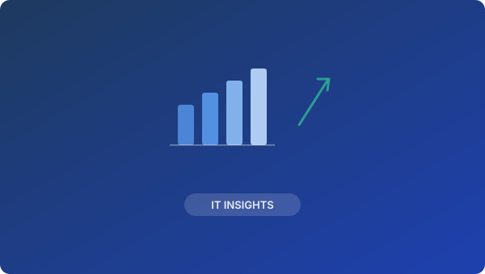

By Kilo on November 10, 2023

Small and medium-sized enterprises (SMEs) are increasingly becoming targets for cyberattacks due to perceived weaker security postures compared to larger corporations. However, adopting fundamental cybersecurity best practices can significantly reduce their risk exposure. This post outlines essential steps SMEs can take to bolster their defenses.
Implementing a multi-layered security approach is crucial. This includes everything from strong password policies and regular employee training to advanced threat detection and incident response plans. Thinkers GK offers tailored cybersecurity solutions designed to protect SMEs without overwhelming their resources.
By proactively addressing cybersecurity, SMEs can safeguard their valuable data and maintain business continuity in an increasingly digital world. Partner with Thinkers GK to build a resilient security posture for your business.
Let's talk about how Thinkers GK can support your business. No commitment, no sales pitch — just a conversation about your needs.